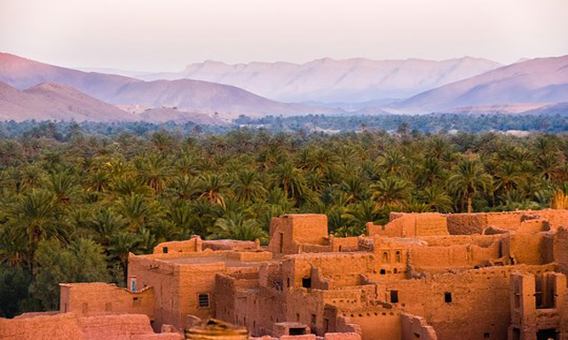
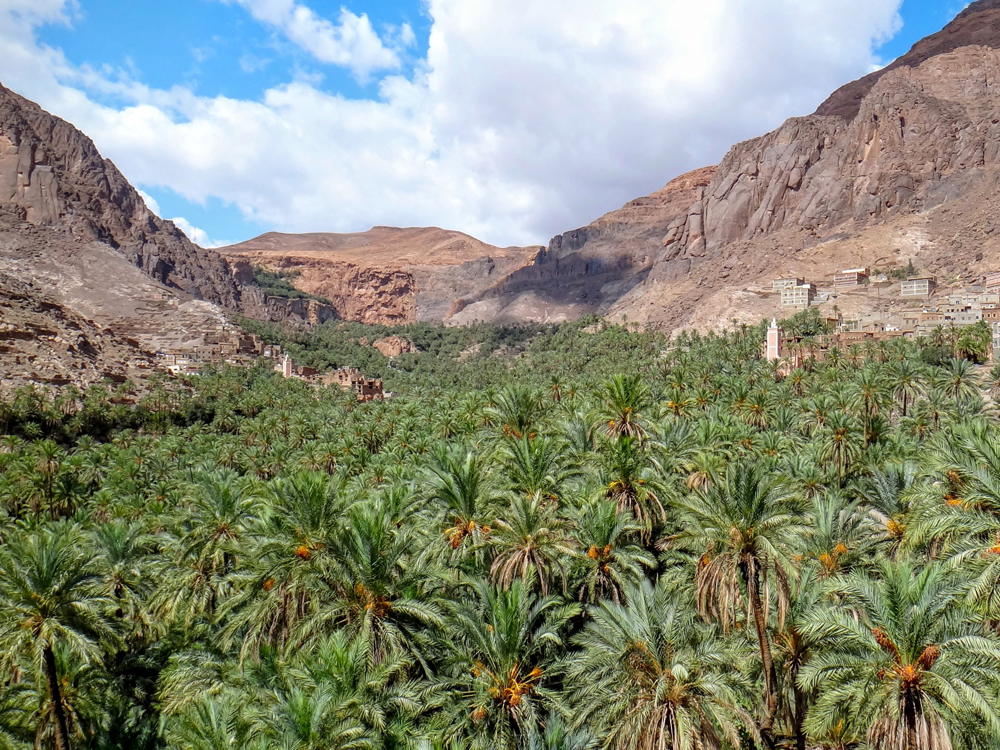
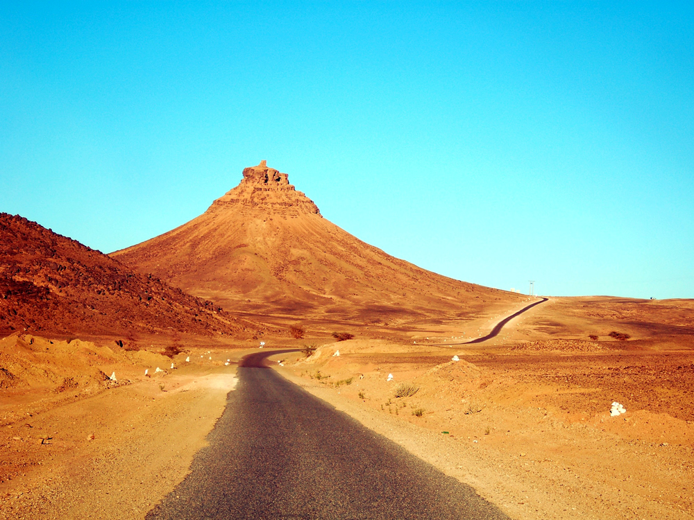

Marcher dans le désert de M'Hamid El Ghizlane et de l'Erg Chegaga
Ce trek dans le désert du Maroc se fait à pied pendant 4 jours, dans la région de M'Hamid El Ghizlane et de l'Erg Chegaga, avec arrivée et départ à Ouarzazate. Vous marchez en général 5 à 6 heures par jour et vous dormez 3 nuits en bivouac sous tente. Le voyage complet compte 7 nuits.
Ici, le trek, c'est la marche : un rythme raisonnable, toujours. L'objectif du guide est d'amener le dernier marcheur au camp. Les journées s'adaptent au groupe : certains veulent marcher toute la journée, d'autres seulement le matin pour se poser l'après-midi devant le paysage.
Le programme n'est pas figé. Berbère Caravane attend votre demande pour construire un voyage sur mesure ou vous faire une proposition : région, nombre de jours, lieux d'arrivée et de départ, à pied ou en véhicule, bivouac classique ou bivouac fixe de luxe au cœur du désert.
Itinéraire jour par jour : 8 jours, 7 nuits
Voici un exemple d'itinéraire. Les nuits (2 à l'hôtel, 2 en camping aménagé, 3 en bivouac) et les 4 jours de marche sont fixes ; le parcours exact et les étapes s'ajustent à votre niveau, à la région et au nombre de jours.
Arrivée à Ouarzazate et première nuit à l'hôtel. Ouarzazate évite environ une journée de route au total par rapport à Marrakech ; si vous tenez à garder Marrakech comme point fort du voyage, c'est possible.
Route vers le sud par la vallée du Drâa : palmeraies, villages en terre et kasbahs en bord de route. Nuit en camping aménagé avec douche et khaïma, avant de partir marcher.

Départ à pied : palmeraies, jardins et villages de la campagne, puis les premiers grands espaces. Vous marchez 5 à 6 heures selon votre niveau ; le véhicule porte les bagages. Première nuit sous tente de bivouac, avec une tente cuisine et une tente mess pour les repas.

Marche à rythme raisonnable dans les paysages ouverts du désert, vers les dunes. Selon l'utilité, un dromadaire peut porter l'eau et les sacs. Deuxième nuit en bivouac.

Les grandes dunes de l'Erg Chegaga : coucher de soleil, nuit étoilée, lever de soleil. Troisième et dernière nuit en bivouac. Vous pouvez marcher toute la journée, ou seulement le matin et vous poser l'après-midi devant le paysage.
Quatrième et dernier jour de marche, puis retour du désert. Douche et khaïma au camping aménagé.
Retour vers Ouarzazate par la route et dernière nuit à l'hôtel.
Départ de Ouarzazate. Si vous ajoutez une journée, le voyage compte 9 jours.
À pied ou avec transport, bivouac classique ou de luxe
Chaque voyage est construit sur demande. Voici les quatre façons les plus courantes de le vivre.
Le trek de 4 jours décrit ici : marche de 5 à 6 h par jour, tentes de 1 ou 2 personnes, bagages portés en véhicule.
Même marche, avec un bivouac fixe de luxe au cœur du désert à la place des tentes classiques. Le niveau de confort se précise avec nous selon votre demande.
Vous découvrez les oasis, les villages et les dunes en véhicule, avec peu de marche, et vous dormez sous tente de bivouac.
Le même voyage en véhicule, avec une nuit en bivouac fixe de luxe.
Choisir son niveau de marche
Le niveau est ajusté aux participants : le but est de réussir le voyage, pas de battre un record.
Quand partir
La meilleure saison va de novembre à fin mars. Pour comparer avec d'autres déserts et d'autres périodes, voyez notre guide des saisons de trek.
Chegaga en 4×4 ou dunes de Merzouga
Vous préférez moins marcher ? Notre circuit de 3 jours à l'Erg Chegaga se fait en 4×4 depuis Marrakech. Vous hésitez avec l'autre grand désert de dunes ? Voyez le trek de Merzouga.
Questions fréquentes
- Peut-on faire un trek à pied dans le désert au départ de Ouarzazate ?
- Oui. Nous proposons un voyage de 8 à 9 jours avec arrivée et départ à Ouarzazate, dans la région de M'Hamid El Ghizlane et de l'Erg Chegaga. Partir de Ouarzazate évite environ une journée de route par rapport à Marrakech (200 km à l'aller et autant au retour).
- Où dort-on pendant le trek ?
- Sur 7 nuits : 2 nuits à l'hôtel (à l'arrivée et avant le retour), 2 nuits en camping aménagé avec douche et khaïma (avant le trek et au retour du désert) et 3 nuits sous tente en bivouac dans le désert. Les tentes sont pour 1 ou 2 personnes, avec une tente cuisine et une tente mess pour les repas. Un bivouac fixe de luxe au cœur du désert est possible sur demande.
- Combien d'heures marche-t-on par jour ?
- En général entre 5 et 6 heures, mais il n'y a pas de règle : certains voyageurs préfèrent marcher le matin seulement et se poser l'après-midi pour admirer le paysage. Le rythme reste toujours raisonnable, l'objectif étant d'amener le dernier marcheur au camp.
- Quel niveau faut-il pour ce trek ?
- Le niveau s'adapte aux participants. Niveau 1 : très facile. Niveau 2 : facile, environ 4 h de marche. Niveau 3 : 5 à 6 h de marche par jour. Le but est que chacun réussisse son voyage.
- Qui porte les bagages ?
- Un véhicule transporte les bagages. Selon l'utilité, un dromadaire peut aussi être prévu pour l'eau et les sacs.
- Quelle est la meilleure saison ?
- De novembre à fin mars.
- Peut-on choisir entre bivouac classique et bivouac de luxe ?
- Oui. Le trek se fait sous tentes de bivouac, et un bivouac fixe de luxe en plein cœur du désert peut être proposé à la place, selon votre demande.